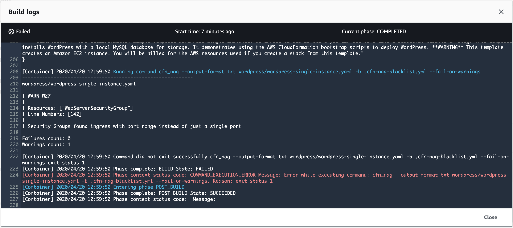

The InstanceType parameter was missing on line 27 of the template. You need to defult it to a specific instance time. In the code sample below, we set the default to a t3.small instance.
Parameters:
InstanceType:
Default: t3.small
Description: WebServer EC2 instance type
Type: String
To check your template file for syntax errors, we used the aws cloudformation validate-template --template-body file://./wordpress/wordpress-single-instance.yaml command.
The aws cloudformation validate-template command is designed to check only the syntax of your template. It does not ensure that the property values that you have specified for a resource are valid for that resource. Nor does it determine the number of resources that will exist when the stack is created.
During validation, AWS CloudFormation first checks if the template is valid JSON. If it isn’t, AWS CloudFormation checks if the template is valid YAML. If both checks fail, AWS CloudFormation returns a template validation error. You can validate templates locally by using the --template-body parameter, or remotely with the --template-url parameter.
To check the operational validity, you need to attempt to create the stack. There is no sandbox or test area for AWS CloudFormation stacks, so you are charged for the resources you create during testing.
If commit and push our changes, and go back to the CodePipeline console, the execution is stil failing. Let’s do that and have a look again at the build logs.
git add wordpress/wordpress-single-instance.yaml
git commit -m "Added a default instance type of t3.small"
git push AWSCodeCommit master

This time we got something different:
------------------------------------------------------------
wordpress/wordpress-single-instance.yaml
------------------------------------------------------------------------------------------------------------------------
| WARN W27
|
| Resources: ["WebServerSecurityGroup"]
| Line Numbers: [142]
|
| Security Groups found ingress with port range instead of just a single port
Failures count: 0
Warnings count: 1